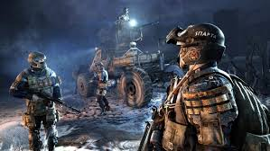

ACCUEIL
HISTOIRE
FACTIONS
MUTANTS
La HANZA
Le IVeme REICH
La LIGNE ROUGE
L'ORDRE DE SPARTE
Image du marché de la Hanza
Image de la station Reich
Image de la station de la Ligne Rouge

Image d'une intervention Ranger
DECOUVRIR LES MUTANTS